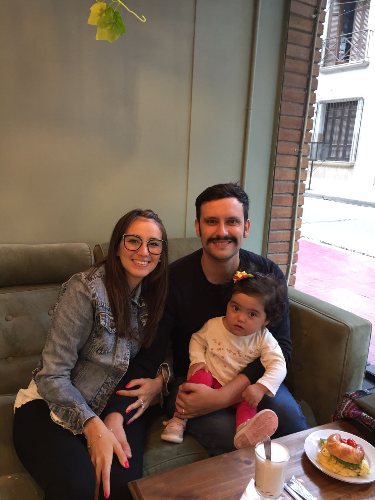

Matias Pastran | WDD 130
Hello there! My name is Matias Pastran, I'm from Mendoza, Argentina. I like playing drums, spending time with my family, and I'm a fan of J.R.R. Tolkien's work. I'm working to be a software developer very soon. I've been marrid for 7 years, and we have a daughter, who is 3 years old. She also loves playing drums with me. I'm a member of the Church of Jesus Christ of Latter Day Saints, and I served as a missionary 12 years ago, in Colombia. Thanks for visiting my page!